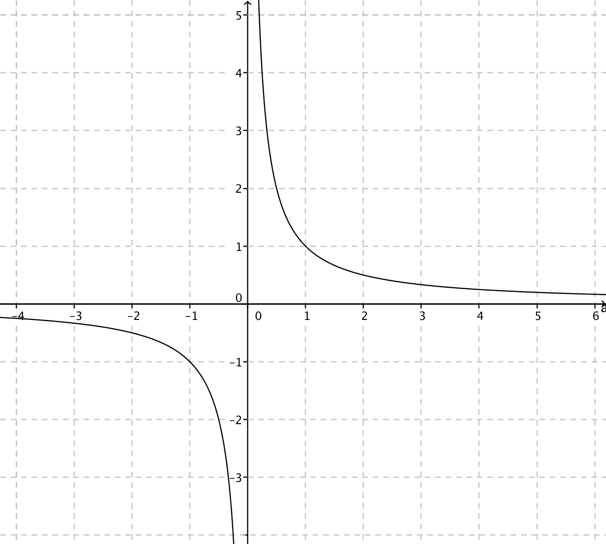
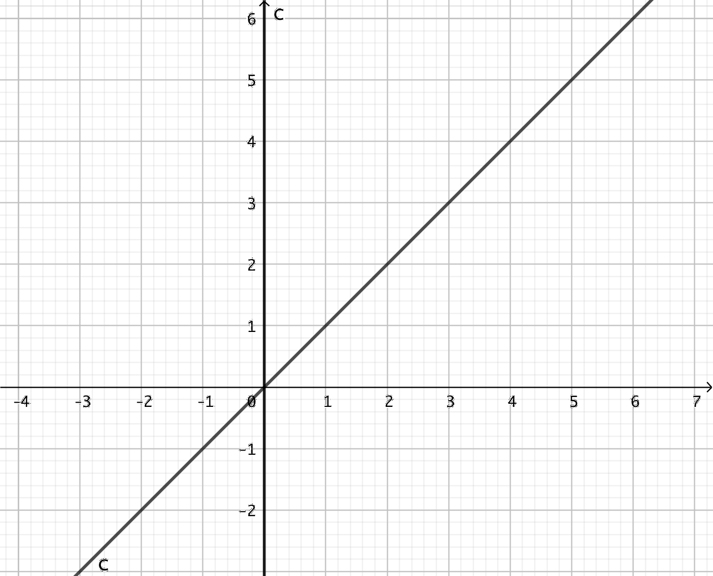
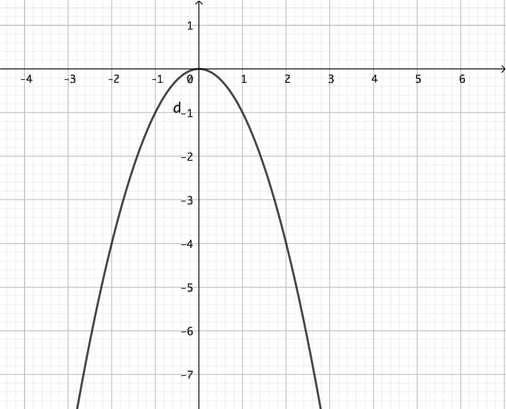
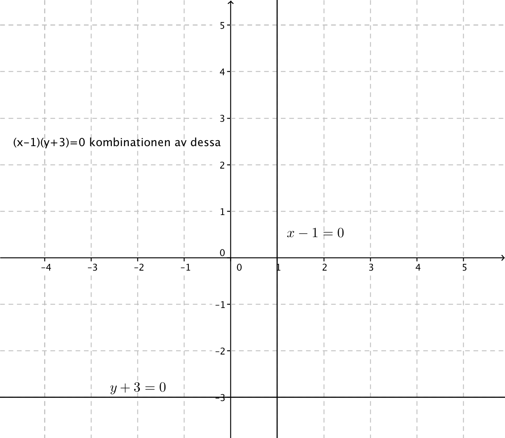
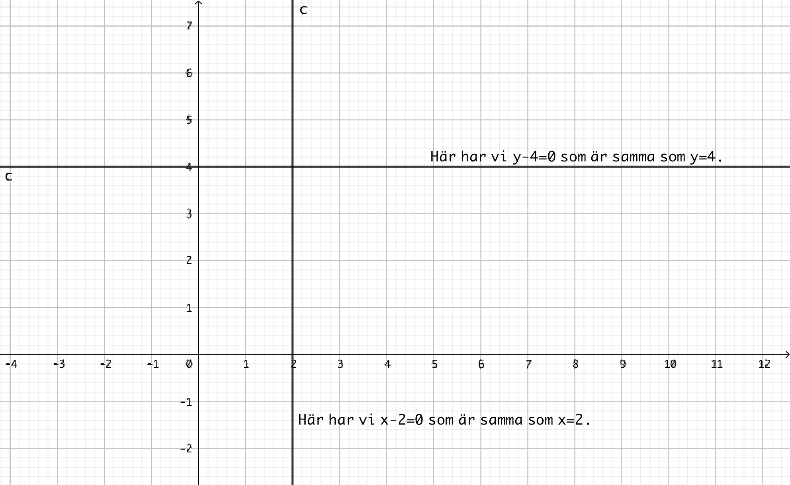
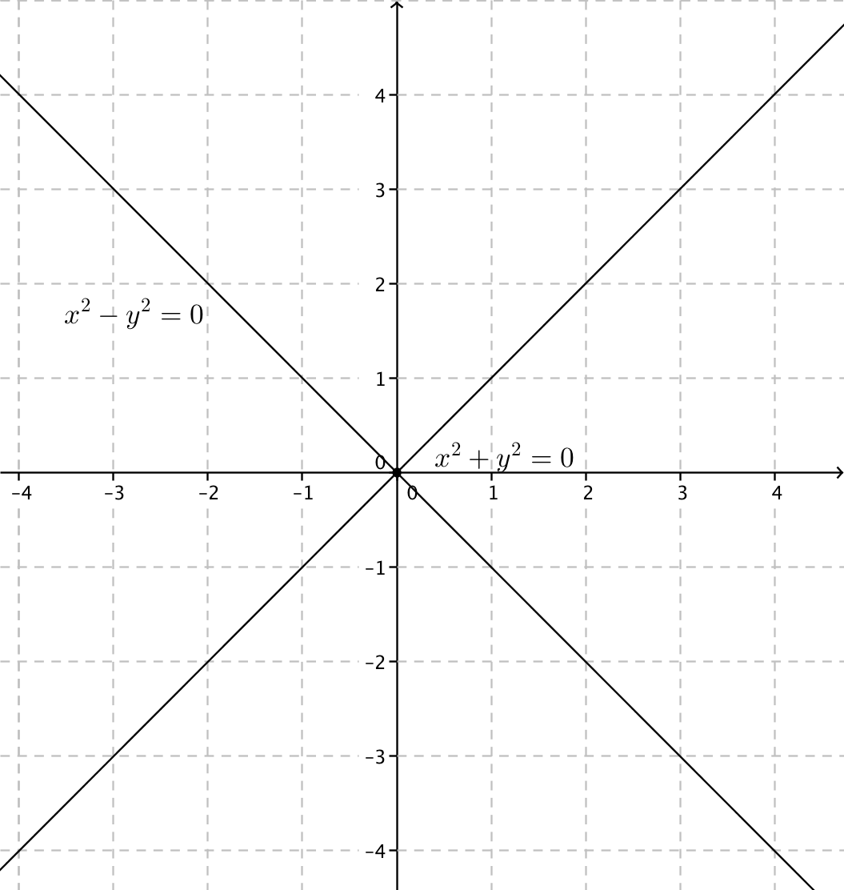
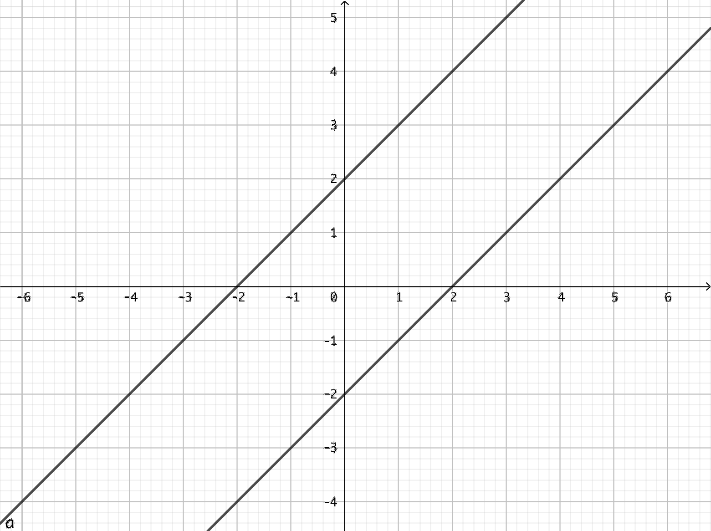
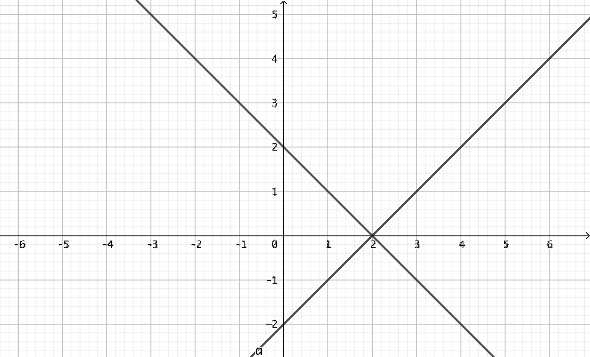
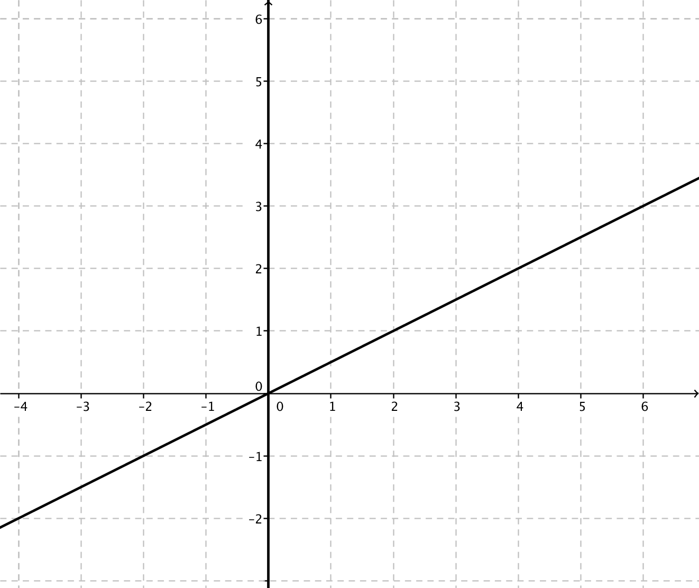
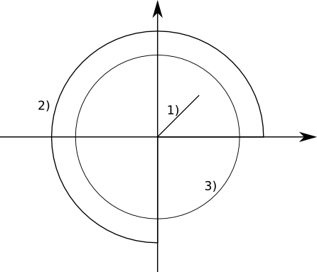

6. Punktmängder
Vi prickar in de punkter i ett koordinatsystem som uppfyller sambandet \( x+y=5 \).
Exempel 1 Visa att punkterna \( (0,5) \), \( (-3,4) \) och \( (-4,3) \) uppfyller ekvationen \( x^2+y^2=25 \). Vilka andra punkter uppfyller ekvationen? Vad bildar punktmängden?
Exempel 2 Ekvationen för en punktmängd är \( x^2-4x-y=0 \). Är punkterna \( (2,0) \), \( (0,0) \) och \( (2,-4) \) punkter i punktmängden? Vad bildar punktmängden?
De talpar som uppfyller en ekvation bildar punkter av grafen. Vi får reda på om punkterna är i punktmängden genom att sätta in punkterna i punktmängden.
Uppgifter
- Låt punktmängden vara \( xy^2-y=0 \). Är punkterna \( (-1,-1) \), \( (1,1) \) och \( (2,1) \) punkter i punktmängden?
\( (-1,-1) \) och \( (1,1) \) är punkter för punktmängden. \( (2,1) \) är inte eftersom ekvationen inte satifieras.
- Rita punktmängden \( xy^2-y=0 \) på papper. Du kommer att behöva flera punkter en de två som du fick i uppgiften ovan.
\( xy^2-y=0 \) kan vi skriva som \( y(xy - 1)=0 \).
Punktmängden består av \( y = 0 \) och \( xy-1 =0 \) som är \( y = \dfrac{1}{x} \).
Punktmängden ser ut som

- Rita punktmängden \( x^2-xy = 0 \). Börja med att studera vad den består av. Rita sedan på papper och kontrollera din lösning på GeoGebra eller motsvarande.
\( x^2-xy = 0 \) kan vi skriva som \( x(x-y)=0 \).
Punktmängden består av linjerna \( x = 0 \) och \( x-y=0 \) som är samma som \( y = x \).
Vi får

- Ekvationen för en punktmängd är \( x^2 + y = 0 \).
- Undersök om punkterna \( A = (-1,1) \), \( B = (-2,4) \), \( C = (-3,-9) \) och \( D = (\sqrt{5},-5) \) är punkter i punktmängden.
A: \( (-1)^2 + 1 = 2 \). Inte punkt i punktmängden.
B: \( (-2)^2 + 4 = 8 \). Inte punkt i punktmängden.
C: \( (-3)^2 -9 = 0 \). Punkt i punktmängden.
D: \( (\sqrt{5})^2 +(-5) = 10 \). Punkt i punktmängden.
- Studera vad punktmängden består av. Bestäm eventuellt några punkter och skissa upp punktmängden på papper. Granska sedan din lösning på GeoGebra eller motsvarande.
\( x^2 + y = 0\) är samma som \( y = -x^2 \).
Vi har en parabel som öppnar sig nedåt.

- Undersök om punkterna \( A = (-1,1) \), \( B = (-2,4) \), \( C = (-3,-9) \) och \( D = (\sqrt{5},-5) \) är punkter i punktmängden.
- Rita följande punktmängder på papper. Granska din lösning genom att rita punktmängden på GeoGebra eller motsvarande.
- \( x-1=0 \)
- \( y+3=0 \)
- \( (x-1)(y+3)=0 \)
Något i stil med

- Rita följande punktmängder på papper. Granska din lösning genom att rita punktmängden på GeoGebra eller motsvarande.
- \( x-2=0 \)
- \( y-4=0 \)
- \( (x-2)(y-4)=0 \)
Något i stil med

- Rita punktmängderna vars ekvationer är \( x^2-y^2=0 \) och \( x^2+y^2=0 \).
\( x^2 - y^2 = 0 \) är samma som \( y^2 = x^2 \).
\( x^2+y^2=0 \) är en punkt i origo.
Något i stil med

- Rita punktmängden \( \mid x-y \mid = 2 \)
\( \mid x-y \mid = 2 \) består av \( x -y = 2 \) som är \( y = x-2 \) och \( x -y = -2 \) som är \( y = x+2 \).
Punktmängden är

- Rita punktmängden \( \mid x-2 \mid = \mid y \mid \).
\( \mid x-2 \mid = \mid y \mid \) består av \( x -2 = y \) som är \( y = x-2 \) och \( x -2 = -y \) som är \( y = -x+2 \).
Punktmängden är

- Rita punktmängden \( \mid x-y\mid = \mid y\mid \).
Vi har \( x-y = y \) som är \( y = \dfrac{1}{x} \) och \( x-y = -y \) som är \( x=0 \).
Något i stil med

- Rita följande polära punktmängder.
- \( r \leq 2 \), och \( \theta = 45^{\circ} \)
- \( r = 4 \), och \( 0 \leq \theta \leq 270^{\circ} \)
- \( r=3 \)
Något i stil med
